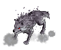
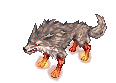

Specimen Recovery
The Specimen Recovery is a GM Event that was released on May 12, 2021. The goal here is to capture roaming specimen using capture devices. The top 3 players who has the most points wins the game. The event duration is 5 minutes.
Event Tickets Generation
You earn 1 Event Ticket every 100 points you earned.
1st place = 30 Event Tickets
2nd place = 20 Event Tickets
3rd place = 15 Event Tickets
Top 10 = Additional 5 Event Tickets
Capturing Devices
Capturing devices are used to capture specimens roaming in the area. Supply boxes can refill one of your limited capturing devices randomly in any amount up to 3 per interact. You may lose a capturing device once you got tripped from one of the traps.
| Image | Name | Description | Uses |
|---|---|---|---|
| 5kRP-n MK.I | MK.I: A restraining tool originally used by the Heart Hunters to contain failed experiments. This easy-to-manufacture model is the basic equipment used for capture operations.
Capture Rate: Regular |
Unlimited | |

|
5kRP-n MK.I+ | MK.II: A far more potent version of the 5kRP-N. This model delivers non-lethal electric shocks on contact with specimens, increasing the odds of a successful restraint.
Capture Rate: Enhanced |
Start at 5 amount. |
| 5kRP-n MK.II | MK.I+: The MK.I+ was developed in response to difficulties restraining faster specimens. This model of the 5kRP-N has a wider reach, allowing the user to compensate for the speed of the target.
Capture Rate: Regular |
Start at 5 amount. | |
| 5kRP-n MK.ULTRA | MK.ULTRA: An experimental fusion of Rune Midgarts' magic with Schwarzwald's technology, this model is capable of assuring a successful capture. However, it's use of magic makes the manufacturing of this model near impossible.
Capture Rate: Guaranteed |
Start at 1 amount. |
Trap Mechanics
Magic Circle - Warps you into a different location.
Mesmerize - Causes Chaos.
Time Decor - Causes to increase or decrease walking speed.
Red cells AoE - Causes you to trip and drop one of your limited capturing devices.
Bubble - Causes you to get stunned.
Roaming Specimens
Do note however that if you fail to capture Specimen [13]k-07 and Specimen v[40-N], they will teleport.
| Image | Name | Points Given |
|---|---|---|
| Specimen r3-[M14] | 5 points | |

|
Specimen k.1.N[4P] | 20 points |
|  | Specimen r0-T[k.3H] | 45 points |

|
Specimen r0-T[k.3H] | 75 points |
|  | Specimen [531]-I.M | 75 points |

|
Specimen [13]k-07 | 100 points |

|
Specimen v[40-N] | 250 points |